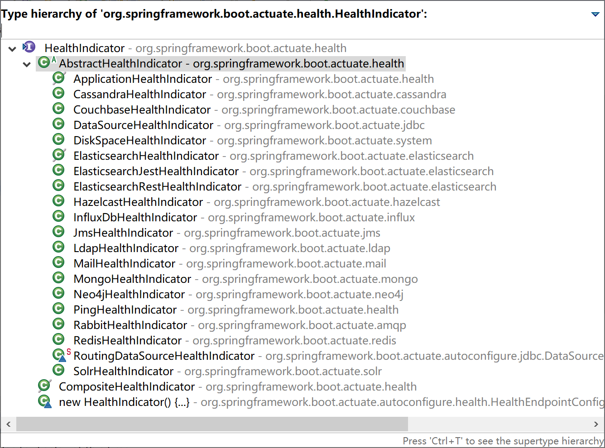
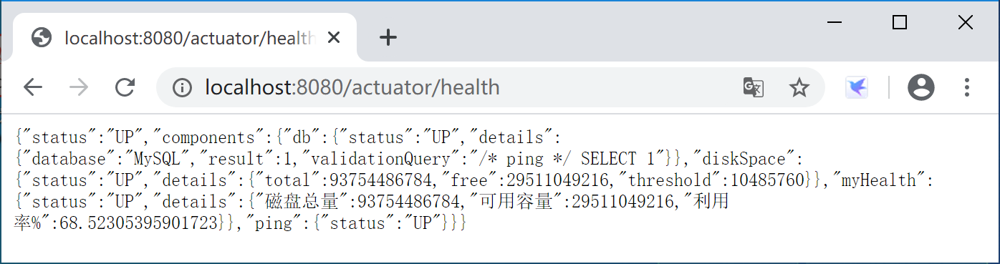
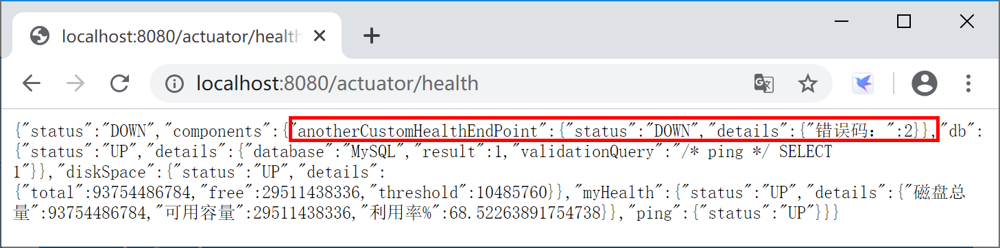
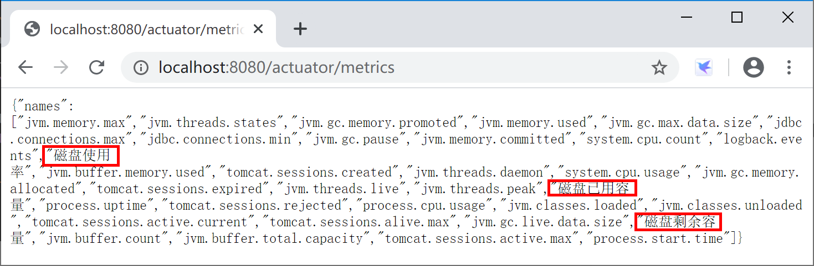
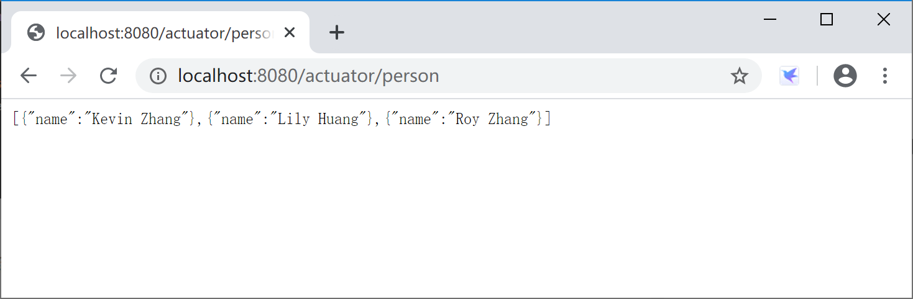
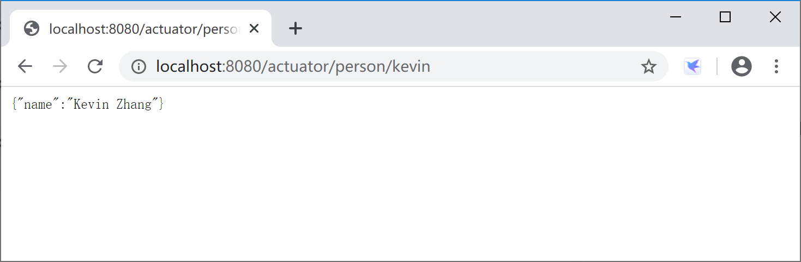

13.3 自定义端点
在项目中，我们可能需要根据实际情况来自定义监控端点，特别是一些和业务相关的监控端点。
13.3.1 自定义健康监控端点
自定义健康监测的端点有两种方式：
- 继承AbstractHealthIndicator类；
- 实现HealthIndicator接口。
通过查看HealthIndicator接口源码，可以看到，系统内置的众多健康检测端点都是从AbstractHealthIndicator抽象类继承而来的。

在spring-boot-actuator项目的application.yml配置文件中添加Actuator健康监控总是显示详细信息配置。
# Actuator 端口配置
management:
endpoint:
health:
show-details: always
13.3.1.1 继承AbstractHealthIndicator类
创建一个监控端点类CustomHealthEndPoint继承AbstractHealthIndicator类。
在其中获取磁盘使用信息并输出监控信息。
package com.example.actuator.custom;
import java.io.File;
import org.springframework.boot.actuate.health.AbstractHealthIndicator;
import org.springframework.boot.actuate.health.Health.Builder;
import org.springframework.stereotype.Component;
/**
* 自定义监控示例，监控磁盘容量
* @author Kevin
*
*/
@Component("myHealth")
public class CustomHealthEndPoint extends AbstractHealthIndicator {
@Override
protected void doHealthCheck(Builder builder) throws Exception {
File[] rootFiles = File.listRoots();
if (rootFiles != null && rootFiles.length != 0) {
long total = 0, free = 0;
for (File file : rootFiles) {
total += file.getTotalSpace(); // 磁盘总量
free += file.getUsableSpace(); // 可用容量
}
long user = total - free; // 已用容量
double userRate = total == 0 ? 0 : ((double) user / total);// 磁盘利用率
builder.up()
.withDetail("磁盘总量", total) // 这里是你要显示的具体健康监测信息
.withDetail("可用容量", free)
.withDetail("利用率%", userRate * 100).build();
} else {
builder.down().build();
}
}
}
运行Spring Boot应用程序，访问监控监控端点http://localhost:8080/actuator/health，查看自定义监控端点输出的监控信息。

13.3.1.2 实现HealthIndicator接口
创建一个AnotherCustomHealthEndPoint类，实现HealthIndicator接口。实现public Health health()方法，在其中生成一个随机数，然后根据这个随机数是否为零来输出健康状态。
package com.example.actuator.custom;
import java.util.Random;
import org.springframework.boot.actuate.health.Health;
import org.springframework.boot.actuate.health.HealthIndicator;
import org.springframework.stereotype.Component;
@Component("anotherCustomHealthEndPoint")
public class AnotherCustomHealthEndPoint implements HealthIndicator {
@Override
public Health health() {
int errorCode = new Random().nextInt(5); // 定义一个错误代码 随机产生
if (errorCode != 0) {
return Health.down().withDetail("错误码：", errorCode).build();
} else {
return Health.up().withDetail("正确代码：", errorCode).build();
}
}
}
运行Spring Boot应用程序，访问监控监控端点http://localhost:8080/actuator/health，查看自定义监控端点输出的监控信息。

13.3.2 自定义Metrics端点
自定义Metrics是通过实现MeterBinder接口完成的。
新建一个DiskspaceMetrics类，实现MeterBinder接口，代码如下：
package com.example.actuator.custom;
import java.io.File;
import org.springframework.stereotype.Component;
import io.micrometer.core.instrument.Gauge;
import io.micrometer.core.instrument.MeterRegistry;
import io.micrometer.core.instrument.binder.MeterBinder;
@Component("diskspaceMetrics")
public class DiskspaceMetrics implements MeterBinder {
private File rootFilePath;
public DiskspaceMetrics() {
this.rootFilePath = new File(".");
}
@Override
public void bindTo(MeterRegistry registry) {
Gauge.builder("磁盘已用容量", rootFilePath, File::getTotalSpace).register(registry);
Gauge.builder("磁盘剩余容量", rootFilePath, File::getFreeSpace).register(registry);
Gauge.builder("磁盘使用率", rootFilePath, c -> {
long totalDiskSpace = rootFilePath.getTotalSpace();
if (totalDiskSpace == 0) {
return 0.0;
}
long usedDiskSpace = totalDiskSpace - rootFilePath.getFreeSpace();
return (double) usedDiskSpace / totalDiskSpace * 100;
}).register(registry);
}
}
运行Spring Boot应用程序，访问监控监控端点http://localhost:8080/actuator/metrics，查看自定义监控端点输出的监控信息。

13.3.3 完全自定义端点
我们也可以通过Spring Boot提供的@Endpoint、 @ReadOperation、@WriteOperation、@DeleteOperation注解完全自定义监控端点，例如和业务运行状态相关的端点。
创建一个PersonEndpoint类：
package com.example.actuator.custom;
import java.util.ArrayList;
import java.util.HashMap;
import java.util.List;
import java.util.Map;
import org.springframework.boot.actuate.endpoint.annotation.Endpoint;
import org.springframework.boot.actuate.endpoint.annotation.ReadOperation;
import org.springframework.boot.actuate.endpoint.annotation.Selector;
import org.springframework.boot.actuate.endpoint.annotation.WriteOperation;
import org.springframework.stereotype.Component;
@Endpoint(id = "person")
@Component
public class PersonEndpoint {
private final Map<String, Person> people = new HashMap<>();
PersonEndpoint() {
this.people.put("kevin", new Person("Kevin Zhang"));
this.people.put("roy", new Person("Roy Zhang"));
this.people.put("lily", new Person("Lily Huang"));
}
@ReadOperation
public List<Person> getAll() {
return new ArrayList<>(this.people.values());
}
@ReadOperation
public Person getPerson(@Selector String person) {
return this.people.get(person);
}
@WriteOperation
public void updatePerson(@Selector String name, String person) {
this.people.put(name, new Person(person));
}
public static class Person {
private String name;
Person(String name) {
this.name = name;
}
public String getName() {
return this.name;
}
public void setName(String name) {
this.name = name;
}
}
}
运行Spring Boot应用程序，访问监控监控端点http://localhost:8080/actuator/person，查看自定义监控端点输出的监控信息。

进一步访问http://localhost:8080/actuator/person/kevin，查看针对kevin用户的监控信息。

本小节示例项目代码：
https://github.com/gyzhang/SpringBootCourseCode/tree/master/spring-boot-actuator